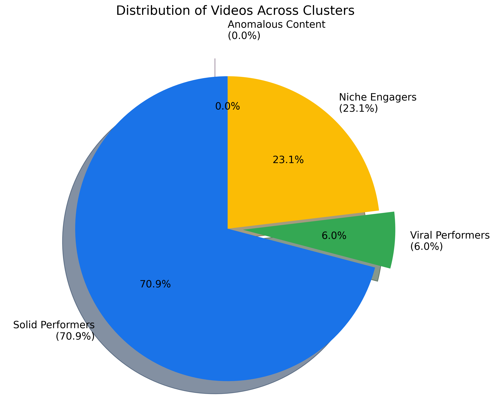
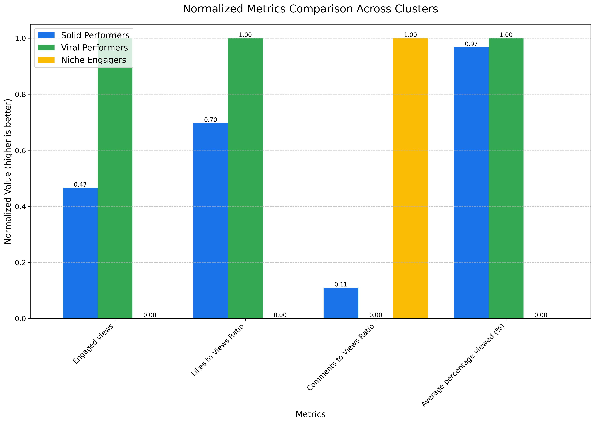
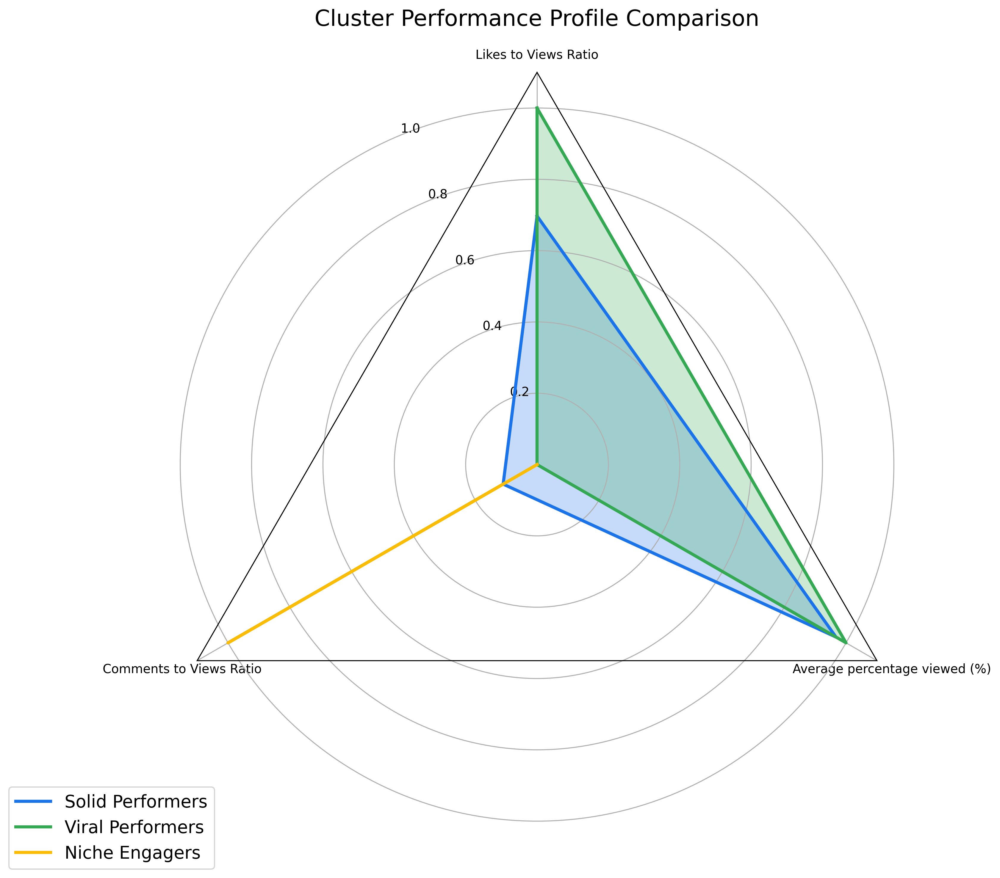

YouTube Analytics: Cluster Analysis Deep Dive
Generated on May 9, 2024
Executive Summary
This report provides an in-depth analysis of the four distinct video performance clusters identified in our YouTube analytics data. Each cluster represents a unique content archetype with specific performance characteristics and strategic implications.
Our analysis reveals clear patterns in how different types of content perform across key metrics, offering actionable insights for content strategy optimization and resource allocation.
Understanding Cluster Analysis in YouTube Analytics
Cluster analysis is a machine learning technique that identifies natural groupings within data. In this analysis, we used K-means clustering to group videos based on seven key performance metrics:
- Engaged views: Number of views with active engagement (likes, comments, shares)
- Likes to Engaged Views Ratio: Percentage of engaged viewers who liked the video
- Comments to Engaged Views Ratio: Percentage of engaged viewers who commented on the video
- Stayed to watch (%): Percentage of viewers who did not immediately swipe away
- Average percentage viewed (%): Average percentage of the video that viewers watched
- Virality Score: Weighted score combining key engagement metrics
- Growth Potential: Combined metric of subscriber growth and engagement
The algorithm identified four distinct clusters, each representing a different "content archetype" with unique performance characteristics.
Cluster Overview

Figure 1: Distribution of videos across the four identified clusters
The table below shows the average values of key metrics for each cluster:
| Cluster |
Engaged views |
Likes to Engaged Views Ratio |
Comments to Engaged Views Ratio |
Stayed to watch (%) |
Average percentage viewed (%) |
Virality Score |
Growth Potential |
| Cluster 0 |
139,379.79 |
6.44% |
0.05% |
80.69% |
82.78% |
40.06 |
1.82 |
| Cluster 1 |
16,291.54 |
4.07% |
0.21% |
63.35% |
61.31% |
41.45 |
6.04 |
| Cluster 2 |
1,520,369.55 |
8.82% |
0.04% |
82.37% |
84.89% |
48.96 |
4.25 |
| Cluster 3 |
1.00 |
-58300.00% |
0.00% |
100.00% |
12.17% |
-17440.00 |
0.00 |

Figure 2: Normalized comparison of key metrics across clusters (excluding anomalous cluster)

Figure 3: Radar chart showing the performance profile of each cluster
Detailed Cluster Analysis
Percentage of Total Content: 6.0% of videos
Key Characteristics:
- Exceptionally high engaged views (1.52M on average)
- High likes-to-engaged-views ratio (8.82%)
- Excellent retention metrics (84.89% average viewed)
- Low comments-to-engaged-views ratio (0.04%)
- Highest virality score (48.96)
Insights:
This cluster represents your most successful viral content. These videos not only attract massive viewership but also maintain exceptional engagement throughout. The high retention metrics indicate compelling content that keeps viewers watching until the end. The strong likes-to-views ratio suggests these videos resonate emotionally with viewers, while the relatively low comments-to-views ratio indicates viewers are more likely to express simple approval than engage in discussion.
These videos are your channel's crown jewels - they drive significant channel growth and establish your brand presence. They likely hit the YouTube algorithm's sweet spot by generating high initial engagement, which then triggers broader distribution.
Strategic Recommendations:
- Conduct detailed content analysis of these videos to identify common themes, formats, hooks, and storytelling techniques
- Prioritize production resources for content that matches the pattern of these high performers
- Use these videos as templates for new content, maintaining their successful elements while refreshing topics
- Consider creating series or follow-ups to these successful videos to capitalize on their established audience
- Analyze publishing patterns (time of day, day of week) to optimize future releases
Percentage of Total Content: 70.9% of videos
Key Characteristics:
- Good engaged views (139K on average)
- Moderate likes-to-engaged-views ratio (6.44%)
- Strong retention metrics (82.78% average viewed)
- Low comments-to-engaged-views ratio (0.05%)
- Good virality score (40.06)
Insights:
This cluster represents your reliable, consistent performers. These videos attract a respectable audience and maintain good engagement metrics. The retention metrics are nearly as strong as your viral content, indicating high-quality production and compelling content. However, they don't achieve the breakthrough viewership of Cluster 1 videos.
These videos form the backbone of your channel, making up over 70% of your content. They serve an important role in maintaining channel activity and keeping your current audience engaged while occasionally breaking through to wider audiences.
Strategic Recommendations:
- Analyze what differentiates these videos from your viral performers (Cluster 1) - what elements are missing?
- Experiment with modified versions of these formats that incorporate elements from your viral content
- Use these videos as your "bread and butter" content to maintain consistent publishing schedule
- Consider how to optimize titles, thumbnails, and hooks to improve initial click-through rates
- Test adding stronger calls-to-action for subscribing to improve growth potential
Percentage of Total Content: 23.1% of videos
Key Characteristics:
- Low engaged views (16.3K on average)
- Lowest likes-to-engaged-views ratio (4.07%)
- Highest comments-to-engaged-views ratio (0.21%)
- Poorest retention metrics (61.31% average viewed)
- Highest growth potential (6.04)
Insights:
This cluster represents your niche content that generates deep engagement from a smaller audience. These videos have the lowest viewership and retention metrics, but they drive the highest relative commenting activity, indicating more discussion and interaction.
This pattern suggests content that appeals to a specific segment of viewers who are highly engaged. The high comments-to-engaged-views ratio indicates these videos spark discussion and community interaction. Despite lower overall performance metrics, these videos may be crucial for building a dedicated community and fostering deeper connections with certain audience segments.
Strategic Recommendations:
- Identify the specific audience segments these videos appeal to and consider developing more targeted content for them
- Leverage the high comment engagement by actively participating in discussions to build community
- Consider creating dedicated playlists or series for this content to better serve the niche audience
- Analyze why these videos have lower retention and test modifications to improve viewer retention
- Don't judge these videos solely on engaged view counts - their contribution to community building may justify continued investment
Percentage of Total Content: 0.02% of videos (1 video)
Key Characteristics:
- Virtually no engaged views (1 on average)
- Extreme negative likes-to-engaged-views ratio (-58,300%)
- Zero comments-to-engaged-views ratio (0.00%)
- Perfect initial retention (100% stayed to watch)
- Very poor overall viewing (12.17% average viewed)
- Extremely negative virality score (-17,440)
Insights:
This cluster represents a single anomalous video with highly unusual metrics that suggest data issues or extremely problematic content. The extreme negative values for likes-to-engaged-views ratio indicate potential data recording errors, content that received significant dislikes, or a video that was taken down shortly after publishing.
The very poor viewing percentage suggests content that quickly disappoints viewers. This could indicate misleading thumbnails/titles or content that fails to deliver on its promise.
Action Items:
- Investigate this video individually to determine if it represents actual content issues or data recording problems
- If this is a legitimate video with problematic metrics, consider removing it from your channel
- Check for policy violations or copyright issues that might have affected this video
- Review thumbnails and titles for potential misleading elements that could explain the retention pattern
- Exclude this video from broader performance analysis as it represents an outlier
Cross-Cluster Analysis and Strategic Implications
Content Portfolio Balance
Your current content portfolio appears to be distributed across the clusters as follows:
- Solid Performers (Cluster 0): 70.9% of content
- Viral Performers (Cluster 1): 6.0% of content
- Niche Engagers (Cluster 2): 23.1% of content
- Anomalous Content (Cluster 3): 0.02% of content (1 video)
This distribution reveals that while your viral content drives the majority of your engaged views, it represents a relatively small portion of your overall content production. Meanwhile, nearly half of your content falls into the Niche Engagers category, which has the lowest engaged viewership but highest growth potential.
Key Strategic Insights
- Balanced Content Strategy: Each cluster serves a different strategic purpose in your channel ecosystem:
- Viral Performers (Cluster 2) drive reach and brand awareness
- Solid Performers (Cluster 0) maintain consistent engagement with existing audience
- Niche Engagers (Cluster 1) build community and foster deeper audience connections
- Content Distribution: Your content is heavily weighted toward Solid Performers (70.9%), with a smaller portion of Niche Engagers (23.1%) and only a small percentage of Viral Performers (6.0%).
- Engagement Patterns: Different clusters show distinct engagement patterns:
- Viral content (Cluster 2) drives high likes-to-engaged-views ratio (8.82%) but low comments
- Niche content (Cluster 1) generates more discussion relative to its engaged viewership (0.21% comments-to-engaged-views ratio)
- Retention Metrics: Both Viral Performers (84.89%) and Solid Performers (82.78%) maintain excellent average viewing percentages, while Niche Engagers have significantly lower retention (61.31%).
Strategic Recommendations
- Optimize Content Mix: Consider producing more Viral Performer content (currently only 6.0% of videos) while maintaining a healthy balance of Solid Performers and Niche Engagers.
- Content Transformation: Analyze what elements could be transferred from your Viral Performers (Cluster 2) to your Niche Engagers (Cluster 1) to improve their retention metrics while maintaining their community-building strengths.
- Audience Segmentation: Develop a more nuanced understanding of which audience segments engage with each content cluster and tailor your content strategy accordingly.
- Testing Framework: Implement a systematic testing framework to experiment with content elements across clusters to identify what drives improved performance.
- Metrics Alignment: Ensure your performance metrics and goals align with the strategic purpose of each content type - don't judge all content by the same engaged view metrics.
Next Steps for Further Analysis
To deepen your understanding of these content archetypes and further optimize your strategy, consider these follow-up analyses:
- Conduct a detailed content audit to identify specific topics, formats, and presentation styles associated with each cluster
- Analyze temporal patterns to determine if certain clusters perform better at different times of day, days of the week, or seasons
- Examine the relationship between video production quality/investment and cluster assignment
- Track individual videos' movement between clusters over time to identify patterns in how content performance evolves
- Analyze audience demographics and behaviors across clusters to better understand who engages with each content type
Video Lists by Cluster
Below are sample videos from each cluster. These lists can help you identify common characteristics and patterns within each content archetype.
Cluster 1: Viral Performers
My son made his sister cry on her birthday, and I've never been prouder.
Engaged views: 7,420,692
Likes: 540,812
Comments: 1,317
What made you go on your villain arc?
Engaged views: 6,511,291
Likes: 462,030
Comments: 11,334
What's your greatest regret?
Engaged views: 5,804,235
Likes: 438,819
Comments: 2,585
I saw a man proudly admitting to arson in court, and he was so badass about it that he walked free.
Engaged views: 4,986,427
Likes: 468,949
Comments: 1,195
What's something you were told as a kid that turned out to be a horrible lie?
Engaged views: 4,693,573
Likes: 383,510
Comments: 1,211
Download Complete Video List (CSV)
Cluster 0: Solid Performers
Single parents, what was the most surprising thing your kid has done?
Engaged views: 847,360
Likes: 97,900
Comments: 213
My family NEVER let me attend my sibling's WEDDINGS and IGNORED my existence.
Engaged views: 846,736
Likes: 69,304
Comments: 192
My Son's KIND GF came to our house BRUISED, So I showed My SON what its like to be the WEAKER person
Engaged views: 845,894
Likes: 79,900
Comments: 1,016
My parents took out student loans in my name and warned me not to cause a scene.
Engaged views: 840,630
Likes: 85,102
Comments: 258
I've been lying to my GF for years, and my lies are the best thing that's ever happened to her.
Engaged views: 838,224
Likes: 118,284
Comments: 417
Download Complete Video List (CSV)
Cluster 2: Niche Engagers
[FULL STORY] I hate my mixed-race parents.
Engaged views: 374,716
Likes: 17,041
Comments: 658
[FULL STORY] I spent hundreds on gifts for my nieces and nephews, but didn't even give them one.
Engaged views: 346,837
Likes: 13,247
Comments: 144
My family is DISAPPOINTED that I was misdiagnosed with cancer.
Engaged views: 340,081
Likes: 33,079
Comments: 118
People who attended their high school reunion, what was the biggest surprise?
Engaged views: 270,288
Likes: 12,534
Comments: 79
I lost interest in a GIRL after WE went to a PARTY TOGETHER and she LEFT with ANOTHER GUY.
Engaged views: 267,790
Likes: 24,012
Comments: 259
Download Complete Video List (CSV)